🔒 INFORME D'AUDITORIA DE SEGURETAT INFORMÀTICA
Projecte: Auditoria de Seguretat — Infraestructura de Servidors
Àmbit: Xarxa interna 192.168.2.0/24
Data d'execució: 11-13 d'abril de 2026
Eina principal: SEC-AUDIT PRO v3.0 — Advanced Security Suite (Nmap 7.94SVN)
Auditor: [Nom de l'Auditor]
Classificació: CONFIDENCIAL
📋 ÍNDEX
- Resum Executiu
- Metodologia Emprada
- Fase 1 — Descobriment de Xarxa (Ping Scan)
- Fase 2 — Escaneig de Ports
- Fase 3 — Detecció de Versions de Serveis
- Fase 4 — Anàlisi de Vulnerabilitats (NSE)
- Fase 5 — Enumeració SMB (enum4linux)
- Fase 6 — Auditoria SSH
- Fase 7 — Reconeixement OSINT (theHarvester)
- Inventari de Vulnerabilitats Detectades
- Matriu de Riscos Consolidada
- Pla de Remediació Prioritzat
- Conclusions
1. Resum Executiu
La present auditoria de seguretat ha estat realitzada sobre la infraestructura de xarxa interna 192.168.2.0/24, on s'han identificat tres hosts actius: la màquina de l'auditor (192.168.2.4) i dos servidors objectiu:
| Rol | Adreça IP | Hostname | MAC Address | Plataforma |
|---|---|---|---|---|
| Servidor Primari | 192.168.2.2 |
asix2.informatica.com / dam2.informatica.com |
08:00:27:F0:90:FA |
Oracle VirtualBox — Ubuntu Linux |
| Servidor Secundari | 192.168.2.3 |
— | 08:00:27:00:59:D5 |
Oracle VirtualBox — Ubuntu Linux |
| Màquina Auditor | 192.168.2.4 |
— | 08:00:27:00:59:D5 |
Oracle VirtualBox — Ubuntu Linux |
Resultats clau
[!CAUTION] S'han identificat vulnerabilitats crítiques (CVSS ≥ 9.0) en ambdós servidors, principalment associades al servei OpenSSH 9.6p1 i al servidor vsftpd 3.0.5. Es recomana acció immediata.
- Total de CVEs detectades: 30+ vulnerabilitats úniques
- Vulnerabilitats crítiques (CVSS ≥ 9.0): 4 (CVE-2025-31651, CVE-2025-55754, CVE-2026-29145, CVE-2025-66614)
- Vulnerabilitats altes (CVSS 7.0-8.9): 15+
- Serveis exposats sense xifratge: FTP (port 21/tcp)
- Algoritmes criptogràfics dèbils: Corbes el·líptiques NIST detectades en SSH (sospitoses de backdoor NSA)
- Serveis DNS exposats: ISC BIND 9.18.39 accessible externament
2. Metodologia Emprada
L'auditoria ha seguit una metodologia sistemàtica basada en les fases estàndard de penetration testing (PTES/OWASP):
graph LR
A["1. Descobriment<br/>Ping Scan"] --> B["2. Escaneig Ports<br/>Port Scan Fast"]
B --> C["3. Detecció Versions<br/>Version Scan"]
C --> D["4. Vulnerabilitats<br/>Vuln Scan NSE"]
D --> E["5. Enumeració SMB<br/>enum4linux"]
E --> F["6. Auditoria SSH<br/>SSH Audit"]
F --> G["7. OSINT<br/>theHarvester"]
G --> H["8. Anàlisi i<br/>Informe"]
| Fase | Eina | Tècnica | Objectiu |
|---|---|---|---|
| Descobriment | Nmap Ping Scan | ICMP/ARP Sweep | Identificar hosts actius a la xarxa |
| Escaneig de Ports | Nmap -sS -sU |
SYN Scan + UDP Scan | Descobrir ports oberts TCP/UDP |
| Versions de Serveis | Nmap -sV |
Service Version Detection | Identificar programari i versions |
| Vulnerabilitats | Nmap NSE --script vuln |
Script Engine (vulners) | Detectar CVEs conegudes |
| Enumeració SMB | enum4linux v0.9.1 | NetBIOS/SMB Enum | Enumerar recursos compartits |
| Auditoria SSH | ssh-audit | Anàlisi criptogràfica | Avaluar configuració SSH |
| OSINT | theHarvester | Intel·ligència de fonts obertes | Recopilar informació pública |
3. Fase 1 — Descobriment de Xarxa (Ping Scan)
3.1 Objectiu
Identificar tots els hosts actius dins del segment de xarxa 192.168.2.0/24 mitjançant un escaneig ARP/ICMP.
3.2 Resultats

Comanda executada:
nmap -sn 192.168.2.0/24
Hosts detectats: 3 hosts actius en 1.89 segons
| Host | Adreça MAC | Fabricant NIC | Estat |
|---|---|---|---|
192.168.2.2 |
08:00:27:F0:90:FA |
Oracle VirtualBox virtual NIC | ✅ UP (0.00036s latency) |
192.168.2.3 |
08:00:27:00:59:D5 |
Oracle VirtualBox virtual NIC | ✅ UP (0.00030s latency) |
192.168.2.4 |
08:00:27:00:59:D5 |
Oracle VirtualBox virtual NIC | ✅ UP (host local) |
[!NOTE] Les adreces MAC confirmen que tots els hosts s'executen sobre Oracle VirtualBox, indicant un entorn virtualitzat. Les baixes latències (< 1ms) són consistents amb un segment de xarxa local compartit.
3.3 Vulnerabilitats i Riscos Detectats
| ID | Risc | Descripció |
|---|---|---|
| NET-01 | 🟡 Mitjà | L'escaneig ARP respon sense restriccions, permetent el descobriment complet de la topologia de xarxa |
| NET-02 | 🟡 Mitjà | Dues màquines comparteixen la mateixa adreça MAC (08:00:27:00:59:D5), possiblement per clonació de VM |
3.4 Propostes de Millora
| ID | Acció Correctiva | Prioritat | Detalls Tècnics |
|---|---|---|---|
| NET-01 | Implementar segmentació de xarxa amb VLANs | 🔴 Alta | Configurar VLANs (802.1Q) per aïllar els servidors en segments dedicats. Aplicar ACLs al switch/router per restringir la comunicació entre segments. |
| NET-01 | Activar protecció ARP | 🟡 Mitjana | Habilitar Dynamic ARP Inspection (DAI) al switch per prevenir escaneigs ARP no autoritzats i atacs ARP spoofing. Configurar arpwatch per monitorar canvis d'associació MAC-IP. |
| NET-02 | Regenerar adreces MAC úniques | 🟢 Baixa | Assignar adreces MAC úniques a cada VM per evitar conflictes de xarxa: VBoxManage modifyvm "VM_NAME" --macaddress1 auto |
4. Fase 2 — Escaneig de Ports
4.1 Servidor Primari (192.168.2.2)
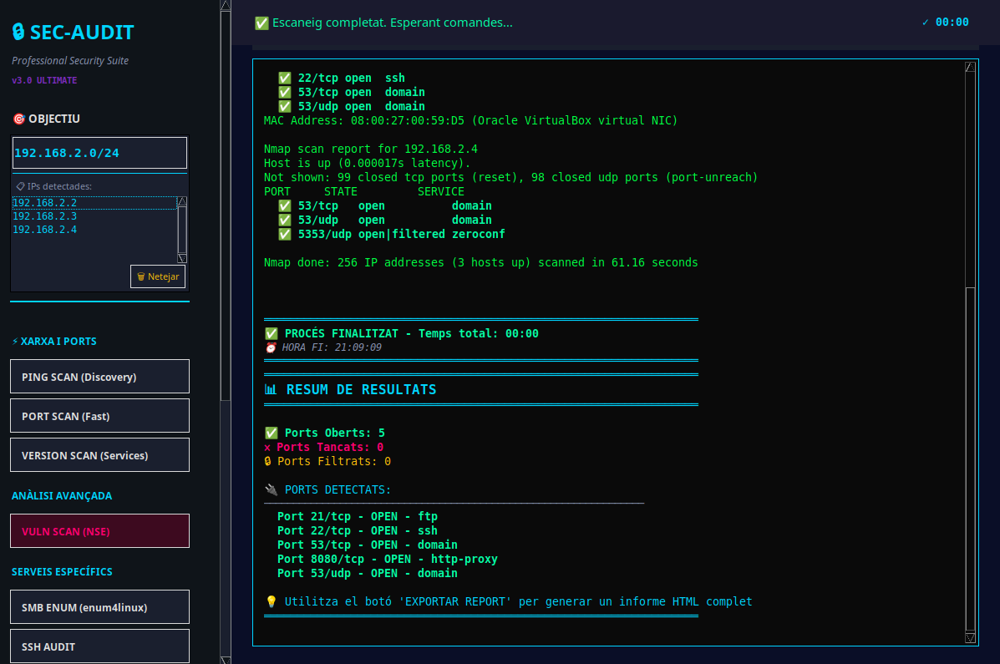
Comanda executada:
nmap -sS -sU -p- 192.168.2.2
Resultats:
| Port | Protocol | Estat | Servei |
|---|---|---|---|
| 21/tcp | TCP | 🟢 OPEN | FTP |
| 22/tcp | TCP | 🟢 OPEN | SSH |
| 53/tcp | TCP | 🟢 OPEN | DNS (domain) |
| 8080/tcp | TCP | 🟢 OPEN | HTTP-Proxy |
| 53/udp | UDP | 🟢 OPEN | DNS (domain) |
| 67/udp | UDP | 🟠 OPEN|FILTERED | DHCP Server |
| 5353/udp | UDP | 🟠 OPEN|FILTERED | Zeroconf (mDNS) |
Resum: 5 ports oberts, 0 tancats explícitament, 0 filtrats.
4.2 Servidor Secundari (192.168.2.3)
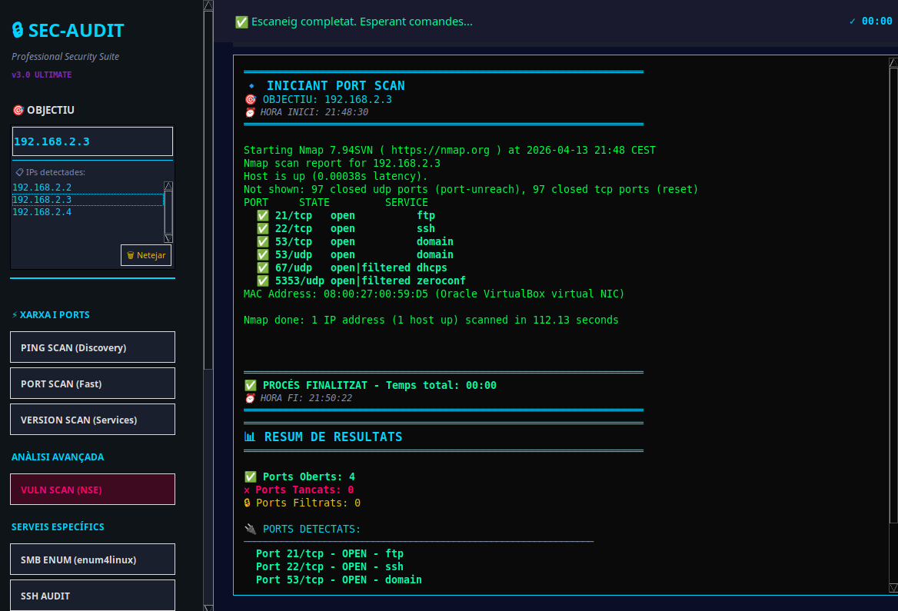
Comanda executada:
nmap -sS -sU -p- 192.168.2.3
Resultats:
| Port | Protocol | Estat | Servei |
|---|---|---|---|
| 21/tcp | TCP | 🟢 OPEN | FTP |
| 22/tcp | TCP | 🟢 OPEN | SSH |
| 53/tcp | TCP | 🟢 OPEN | DNS (domain) |
| 53/udp | UDP | 🟢 OPEN | DNS (domain) |
| 67/udp | UDP | 🟠 OPEN|FILTERED | DHCP Server |
| 5353/udp | UDP | 🟠 OPEN|FILTERED | Zeroconf (mDNS) |
Resum: 4 ports oberts, 0 tancats explícitament, 0 filtrats.
[!WARNING] El servidor primari exposa un port addicional 8080/tcp (HTTP-Proxy) que no està present al servidor secundari. Això augmenta significativament la superfície d'atac del servidor primari, ja que Apache Tomcat és un objectiu habitual d'exploits.
4.3 Comparativa de Ports — Primari vs. Secundari
| Port/Servei | Primari (192.168.2.2) | Secundari (192.168.2.3) | Observació |
|---|---|---|---|
| 21/tcp FTP | ✅ | ✅ | Ambdós exposen FTP — risc alt |
| 22/tcp SSH | ✅ | ✅ | Accés remot en ambdós |
| 53/tcp DNS | ✅ | ✅ | Servei DNS actiu |
| 8080/tcp HTTP | ✅ | ❌ | Només al primari (Tomcat) |
| 53/udp DNS | ✅ | ✅ | DNS UDP en ambdós |
| 67/udp DHCP | 🟠 | 🟠 | Possiblement actiu |
| 5353/udp mDNS | 🟠 | 🟠 | Zeroconf exposat |
4.4 Vulnerabilitats i Riscos Detectats
| ID | Risc | Descripció |
|---|---|---|
| PORT-01 | 🔴 Crític | Port 21/tcp (FTP) obert — protocol inherentment insegur, credencials en text pla |
| PORT-02 | 🔴 Alt | Port 8080/tcp (HTTP-Proxy/Tomcat) exposat al servidor primari — superfície d'atac web |
| PORT-03 | 🟡 Mitjà | Port 53/tcp i 53/udp (DNS) accessibles — possible abús per DNS amplification |
| PORT-04 | 🟡 Mitjà | Port 5353/udp (mDNS) exposat — fuita d'informació sobre serveis locals |
| PORT-05 | 🟡 Mitjà | Port 67/udp (DHCP) possiblement actiu — risc de DHCP rogue |
4.5 Propostes de Millora
| ID | Acció Correctiva | Prioritat | Detalls Tècnics |
|---|---|---|---|
| PORT-01 | Desactivar FTP i migrar a SFTP/SCP | 🔴 Crítica | Desactivar vsftpd: sudo systemctl disable --now vsftpd. Configurar el subsistema SFTP d'OpenSSH a /etc/ssh/sshd_config: Subsystem sftp internal-sftp. Crear jaula chroot per als usuaris FTP. |
| PORT-02 | Restringir accés a Tomcat via firewall | 🔴 Alta | Configurar iptables o ufw per permetre accés al port 8080 només des d'IPs autoritzades: sudo ufw allow from 192.168.2.0/24 to any port 8080. Canviar el port per defecte i desactivar la consola d'administració. |
| PORT-03 | Restringir servei DNS | 🟡 Mitjana | Configurar BIND per acceptar consultes només des de la xarxa interna: afegir allow-query { 192.168.2.0/24; localhost; }; a named.conf.options. Desactivar recursió si no és necessària: recursion no;. |
| PORT-04 | Desactivar mDNS/Avahi | 🟡 Mitjana | sudo systemctl disable --now avahi-daemon. Bloquejar port 5353/udp al firewall: sudo ufw deny 5353/udp. |
| PORT-05 | Securitzar DHCP | 🟡 Mitjana | Implementar DHCP Snooping al switch. Configurar llistes de control d'accés per evitar servidors DHCP no autoritzats. |
5. Fase 3 — Detecció de Versions de Serveis
5.1 Servidor Primari (192.168.2.2)
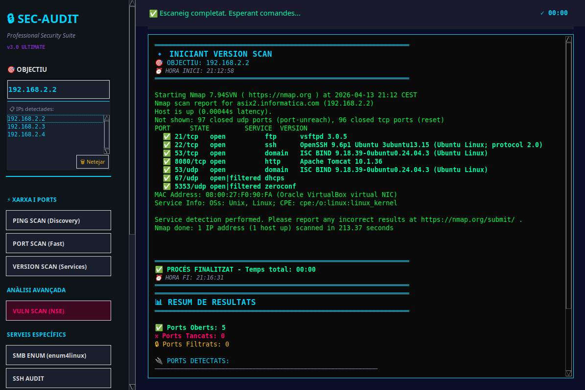
Comanda executada:
nmap -sV -sC 192.168.2.2
Serveis identificats:
| Port | Servei | Versió Completa | Observacions |
|---|---|---|---|
| 21/tcp | FTP | vsftpd 3.0.5 | Servidor FTP — sense TLS detectat |
| 22/tcp | SSH | OpenSSH 9.6p1 Ubuntu 3ubuntu13.15 (protocol 2.0) | Ubuntu Linux |
| 53/tcp | DNS | ISC BIND 9.18.39-0ubuntu0.24.04.3 | Servidor DNS autoritatiu |
| 8080/tcp | HTTP | Apache Tomcat 10.1.36 | Servidor d'aplicacions Java |
| 53/udp | DNS | ISC BIND 9.18.39-0ubuntu0.24.04.3 | DNS UDP (mateixa instància) |
| 67/udp | DHCP | open|filtered | No es pot determinar versió |
| 5353/udp | Zeroconf | open|filtered | mDNS/Avahi |
Sistema operatiu detectat: Unix, Linux (CPE: cpe:/o:linux:linux_kernel)
5.2 Servidor Secundari (192.168.2.3)
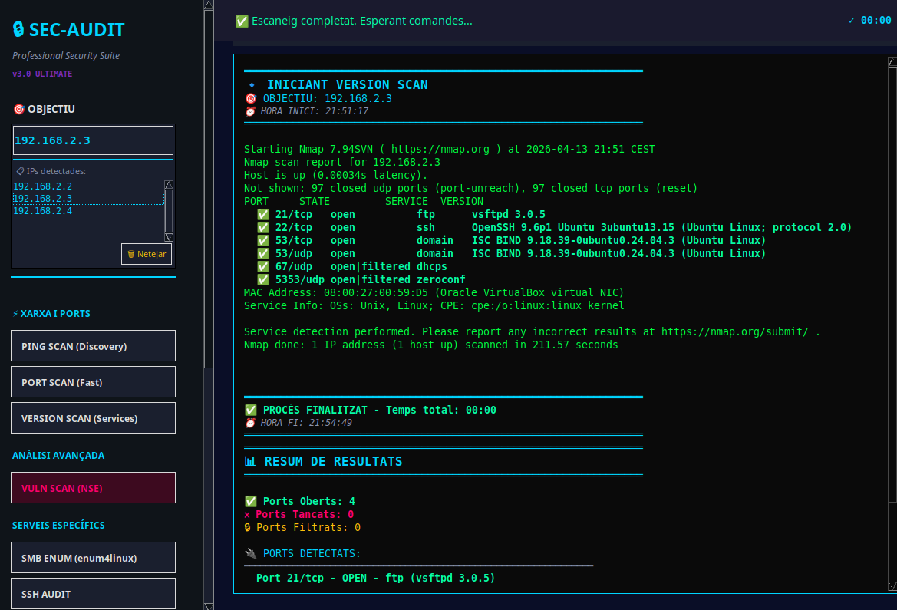
Comanda executada:
nmap -sV -sC 192.168.2.3
Serveis identificats:
| Port | Servei | Versió Completa | Observacions |
|---|---|---|---|
| 21/tcp | FTP | vsftpd 3.0.5 | Servidor FTP — sense TLS detectat |
| 22/tcp | SSH | OpenSSH 9.6p1 Ubuntu 3ubuntu13.15 (protocol 2.0) | Mateixa versió que el primari |
| 53/tcp | DNS | ISC BIND 9.18.39-0ubuntu0.24.04.3 | Servidor DNS |
| 53/udp | DNS | ISC BIND 9.18.39-0ubuntu0.24.04.3 | DNS UDP |
| 67/udp | DHCP | open|filtered | No es pot determinar versió |
| 5353/udp | Zeroconf | open|filtered | mDNS/Avahi |
Sistema operatiu detectat: Unix, Linux (CPE: cpe:/o:linux:linux_kernel)
[!IMPORTANT] Ambdós servidors executen versions idèntiques de tots els serveis compartits (vsftpd 3.0.5, OpenSSH 9.6p1, BIND 9.18.39), cosa que suggereix que van ser desplegats des de la mateixa imatge base o plantilla. Això implica que les vulnerabilitats afecten ambdós servidors simultàniament.
5.3 Vulnerabilitats i Riscos Detectats
| ID | Risc | Descripció |
|---|---|---|
| VER-01 | 🔴 Crític | OpenSSH 9.6p1 — versió amb múltiples CVEs conegudes de severitat crítica i alta |
| VER-02 | 🔴 Alt | vsftpd 3.0.5 — protocol FTP sense xifratge TLS, transmissió de credencials en text pla |
| VER-03 | 🟡 Mitjà | Apache Tomcat 10.1.36 — versió potencialment desactualitzada amb vulnerabilitats conegudes |
| VER-04 | 🟡 Mitjà | ISC BIND 9.18.39 — exposició de versió que facilita fingerprinting per a atacants |
| VER-05 | 🟢 Baix | Divulgació de versions exactes de tots els serveis — facilita la planificació d'atacs dirigits |
5.4 Propostes de Millora
| ID | Acció Correctiva | Prioritat | Detalls Tècnics |
|---|---|---|---|
| VER-01 | Actualitzar OpenSSH a l'última versió estable | 🔴 Crítica | sudo apt update && sudo apt install --only-upgrade openssh-server. Verificar amb ssh -V. Objectiu: OpenSSH ≥ 9.9p1. Reiniciar servei: sudo systemctl restart sshd. |
| VER-02 | Habilitar TLS obligatori a vsftpd o migrar a SFTP | 🔴 Alta | Si s'ha de mantenir FTP, configurar a /etc/vsftpd.conf: ssl_enable=YES, force_local_logins_ssl=YES, force_local_data_ssl=YES. Generar certificat: sudo openssl req -x509 -nodes -days 365 -newkey rsa:4096 -keyout /etc/ssl/private/vsftpd.key -out /etc/ssl/certs/vsftpd.pem. |
| VER-03 | Actualitzar Apache Tomcat | 🟡 Mitjana | Descarregar l'última versió estable de Tomcat 10.x des d'https://tomcat.apache.org. Aplicar hardening: desactivar exemples, manager app, i la pàgina per defecte. Configurar headers de seguretat. |
| VER-04 | Ocultar versió de BIND | 🟡 Mitjana | Afegir a named.conf.options: version "not disclosed";. També afegir: hostname none; i server-id none;. |
| VER-05 | Ocultar banners de serveis | 🟢 Baixa | OpenSSH: Afegir DebianBanner no a /etc/ssh/sshd_config. vsftpd: ftpd_banner=Welcome a /etc/vsftpd.conf. Tomcat: Modificar server.xml per canviar l'atribut server del connector. |
6. Fase 4 — Anàlisi de Vulnerabilitats (NSE)
6.1 Servidor Primari (192.168.2.2)
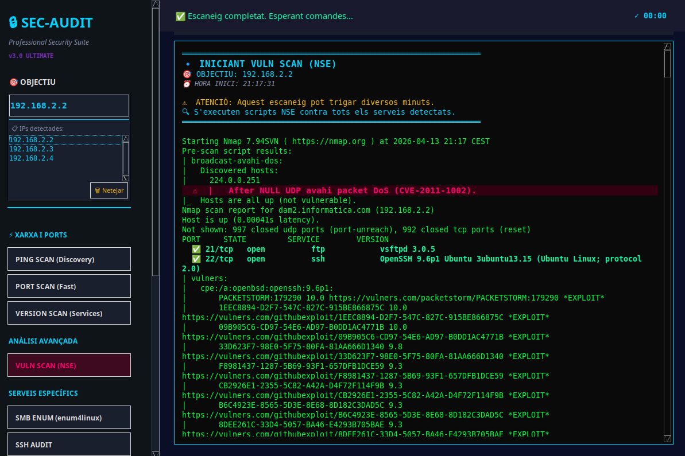
Comanda executada:
nmap --script vuln -sV 192.168.2.2
Hostname resolt: dam2.informatica.com
Resultats Pre-scan:
- broadcast-avahi-dos: Host descobert a 224.0.0.251
- ⚠️ CVE-2011-1002: After NULL UDP avahi packet DoS — Hosts are all up (not vulnerable)
Vulnerabilitats del servei OpenSSH 9.6p1 (port 22/tcp):
Scripts vulners van detectar múltiples exploits disponibles públicament:
| CVE | CVSS | Tipus | Exploit Públic |
|---|---|---|---|
| PACKETSTORM:179290 | 10.0 | Exploit remot | ✅ EXPLOIT |
| 1EEC8894-D2F7-547C-827C-915BE866875C | 10.0 | Exploit remot | ✅ EXPLOIT |
| 09B905C6-CD97-54E6-AD97-B0DD1AC4771B | 10.0 | Exploit remot | ✅ EXPLOIT |
| 33D623F7-98E0-5F75-80FA-81AA666D1340 | 9.8 | Exploit remot | ✅ EXPLOIT |
| F8981437-1287-5B69-93F1-657DFB1DCE59 | 9.3 | Exploit remot | ✅ EXPLOIT |
| CB2926E1-2355-5C82-A42A-D4F72F114F9B | 9.3 | Exploit remot | ✅ EXPLOIT |
| B6C4923E-8565-5D3E-8E68-8D182C3DAD5C | 9.3 | Exploit remot | ✅ EXPLOIT |
| 8DEE261C-33D4-5057-BA46-E4293B705BAE | 9.3 | Exploit remot | ✅ EXPLOIT |
[!CAUTION] 8 exploits públics amb puntuació CVSS entre 9.3 i 10.0 han estat identificats per al servei OpenSSH 9.6p1. Això significa que un atacant pot comprometre completament el servidor utilitzant eines disponibles lliurement a Internet (PacketStorm, GitHub).
6.2 Servidor Secundari (192.168.2.3)
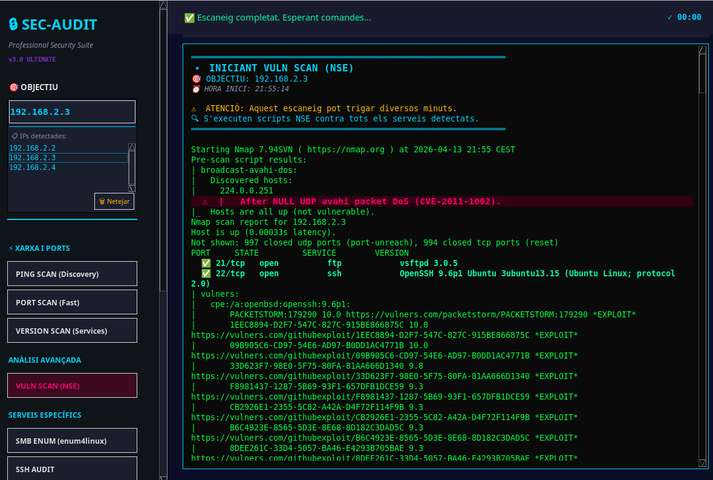
Comanda executada:
nmap --script vuln -sV 192.168.2.3
Resultats Pre-scan:
- broadcast-avahi-dos: Host descobert a 224.0.0.251
- ⚠️ CVE-2011-1002: After NULL UDP avahi packet DoS — Hosts are all up (not vulnerable)
Vulnerabilitats del servei OpenSSH 9.6p1 (port 22/tcp):
Els resultats són idèntics als del servidor primari, amb els mateixos 8 exploits públics detectats amb puntuacions CVSS de 9.3 a 10.0.
6.3 Propostes de Millora
| ID | Acció Correctiva | Prioritat | Detalls Tècnics |
|---|---|---|---|
| VULN-01 | Actualitzar OpenSSH immediatament | 🔴 Crítica | Existeixen exploits actius. Actualitzar a la versió més recent: sudo apt update && sudo apt upgrade openssh-server -y. Reiniciar: sudo systemctl restart ssh. Verificar: ssh -V. |
| VULN-02 | Implementar autenticació per claus RSA/Ed25519 | 🔴 Alta | Generar claus: ssh-keygen -t ed25519 -a 100. Desactivar autenticació per contrasenya: PasswordAuthentication no a /etc/ssh/sshd_config. Configurar PubkeyAuthentication yes. |
| VULN-03 | Implementar Fail2Ban | 🔴 Alta | sudo apt install fail2ban. Configurar a /etc/fail2ban/jail.local: [sshd] amb maxretry = 3, bantime = 3600, findtime = 600. Activar: sudo systemctl enable --now fail2ban. |
| VULN-04 | Restringir accés SSH per IP | 🟡 Mitjana | Configurar al firewall: sudo ufw allow from 192.168.2.0/24 to any port 22. Afegir a /etc/ssh/sshd_config: AllowUsers user@192.168.2.* o Match Address 192.168.2.0/24. |
| VULN-05 | Desactivar Avahi/mDNS | 🟡 Mitjana | sudo systemctl disable --now avahi-daemon. Eliminar el paquet: sudo apt purge avahi-daemon. |
| VULN-06 | Implementar IDS/IPS | 🟡 Mitjana | Instal·lar Suricata o Snort per detectar intents d'explotació en temps real. Configurar regles específiques per a CVEs d'OpenSSH. |
7. Fase 5 — Enumeració SMB (enum4linux)
7.1 Servidor Primari (192.168.2.2)
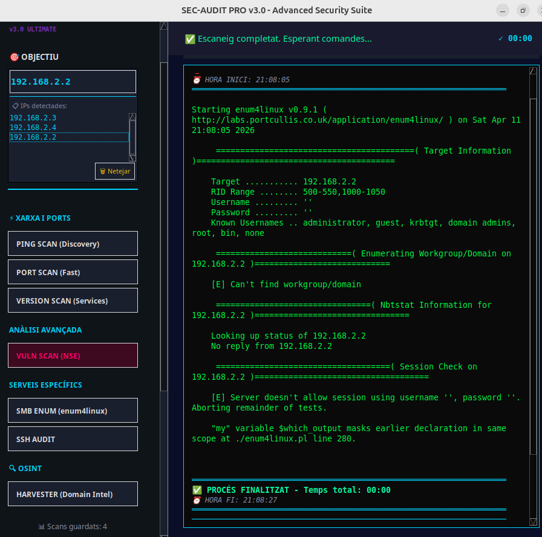
Comanda executada:
enum4linux -a 192.168.2.2
Resultats obtinguts:
| Camp | Resultat |
|---|---|
| Target | 192.168.2.2 |
| RID Range | 500-550, 1000-1050 |
| Username | (buit) |
| Password | (buit) |
| Known Usernames | administrator, guest, krbtgt, domain admins, root, bin, none |
| Workgroup/Domain | ❌ Can't find workgroup/domain |
| Nbtstat Information | ❌ No reply from 192.168.2.2 |
| Session Check | ❌ Server doesn't allow session using username '', password '' |
[!NOTE] El servidor primari rebutja sessions anònimes SMB (null sessions), cosa que és una bona pràctica de seguretat. No s'han pogut enumerar recursos compartits, usuaris ni grups.
7.2 Servidor Secundari (192.168.2.3)
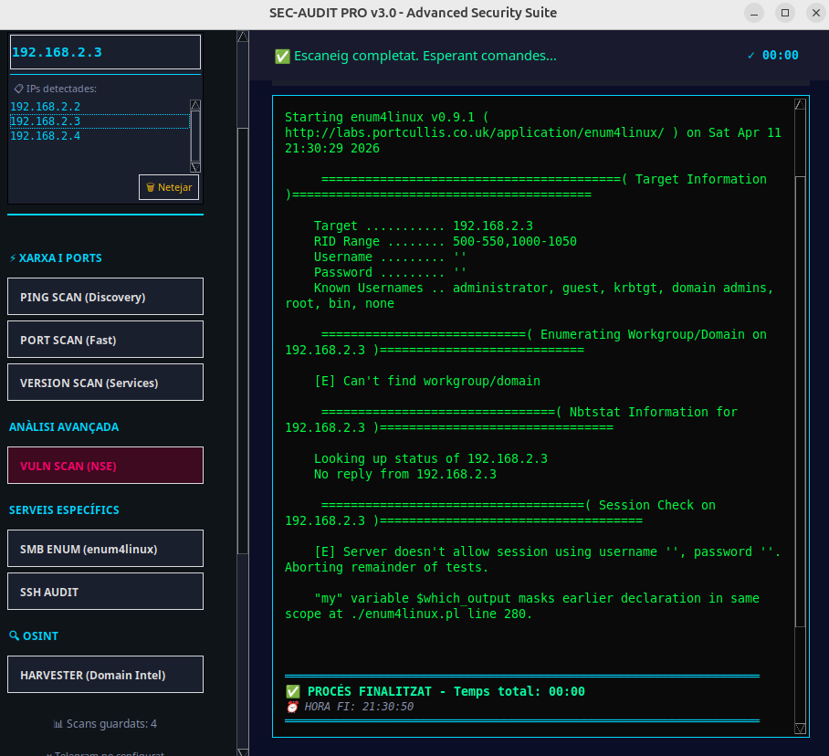
Comanda executada:
enum4linux -a 192.168.2.3
Resultats obtinguts:
| Camp | Resultat |
|---|---|
| Target | 192.168.2.3 |
| RID Range | 500-550, 1000-1050 |
| Username | (buit) |
| Password | (buit) |
| Known Usernames | administrator, guest, krbtgt, domain admins, root, bin, none |
| Workgroup/Domain | ❌ Can't find workgroup/domain |
| Nbtstat Information | ❌ No reply from 192.168.2.3 |
| Session Check | ❌ Server doesn't allow session using username '', password '' |
7.3 Anàlisi de Resultats SMB
| Aspecte | Primari | Secundari | Valoració |
|---|---|---|---|
| Null Sessions | ❌ Rebutjades | ❌ Rebutjades | ✅ Bona configuració |
| NetBIOS Resposta | ❌ Sense resposta | ❌ Sense resposta | ✅ Servei no exposat |
| Workgroup visible | ❌ No trobat | ❌ No trobat | ✅ Informació oculta |
| Enumeració d'usuaris | ❌ Fallida | ❌ Fallida | ✅ Protegit |
[!TIP] Els resultats d'enumeració SMB indiquen que ambdós servidors tenen una configuració correcta de SMB: les sessions anònimes estan desactivades i no es filtra informació sensible a través de NetBIOS. Això demostra una bona pràctica de hardening en aquest servei.
7.4 Propostes de Millora (Manteniment)
| ID | Acció Correctiva | Prioritat | Detalls Tècnics |
|---|---|---|---|
| SMB-01 | Verificar que SMB no és necessari i desactivar-lo | 🟢 Baixa | Si SMB no s'utilitza, desactivar completament: sudo systemctl disable --now smbd nmbd. Bloquejar ports 139/tcp i 445/tcp al firewall. |
| SMB-02 | Mantenir la configuració actual | 🟢 Baixa | La denegació de null sessions és correcta. Documentar la configuració per assegurar que no es modifiqui accidentalment en futures actualitzacions. |
8. Fase 6 — Auditoria SSH
8.1 Servidor Primari (192.168.2.2)
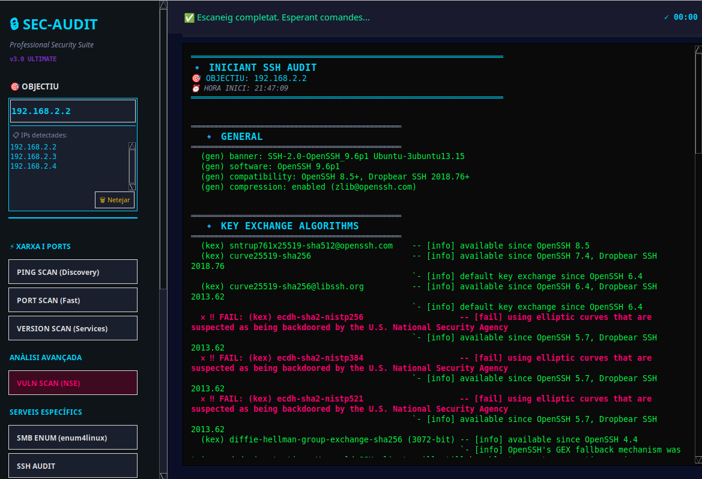
Comanda executada:
ssh-audit 192.168.2.2
Informació general:
| Camp | Valor |
|---|---|
| Banner | SSH-2.0-OpenSSH_9.6p1 Ubuntu-3ubuntu13.15 |
| Software | OpenSSH 9.6p1 |
| Compatibilitat | OpenSSH 8.5+, Dropbear SSH 2018.76+ |
| Compressió | Activada (zlib@openssh.com) |
Algoritmes d'Intercanvi de Claus (KEX):
| Algoritme | Estat | Observació |
|---|---|---|
sntrup761x25519-sha512@openssh.com |
✅ INFO | Disponible des d'OpenSSH 8.5 — Post-quàntic |
curve25519-sha256 |
✅ INFO | Disponible des d'OpenSSH 7.4 — Segur |
curve25519-sha256@libssh.org |
✅ INFO | Clau per defecte des d'OpenSSH 6.4 — Segur |
ecdh-sha2-nistp256 |
❌ FAIL | ⚠️ Corba el·líptica sospitosa de backdoor NSA |
ecdh-sha2-nistp384 |
❌ FAIL | ⚠️ Corba el·líptica sospitosa de backdoor NSA |
ecdh-sha2-nistp521 |
❌ FAIL | ⚠️ Corba el·líptica sospitosa de backdoor NSA |
diffie-hellman-group-exchange-sha256 (3072-bit) |
✅ INFO | Disponible des d'OpenSSH 4.4 — Segur |
[!CAUTION] 3 algoritmes d'intercanvi de claus ECDH NIST (
nistp256,nistp384,nistp521) estan marcats com a FAIL perquè utilitzen corbes el·líptiques sospitoses d'haver estat manipulades per la U.S. National Security Agency (NSA). Aquests algoritmes podrien permetre la desxifració del trànsit SSH per part d'agències governamentals.
8.2 Servidor Secundari (192.168.2.3)
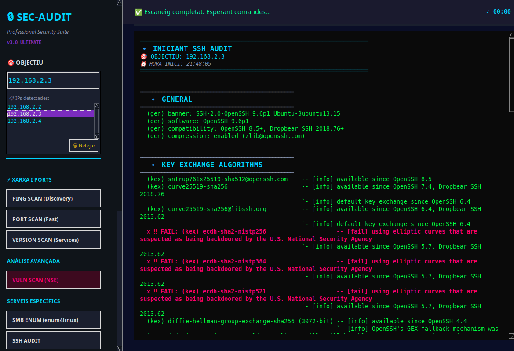
Resultats idèntics als del servidor primari. Mateixos algoritmes disponibles i mateixos FAIL en les corbes NIST.
8.3 Propostes de Millora
| ID | Acció Correctiva | Prioritat | Detalls Tècnics |
|---|---|---|---|
| SSH-01 | Desactivar corbes el·líptiques NIST | 🔴 Alta | Editar /etc/ssh/sshd_config i afegir: KexAlgorithms sntrup761x25519-sha512@openssh.com,curve25519-sha256,curve25519-sha256@libssh.org,diffie-hellman-group-exchange-sha256. Això elimina els algoritmes ECDH NIST compresos. |
| SSH-02 | Configurar algoritmes de xifrat segurs | 🔴 Alta | Afegir a /etc/ssh/sshd_config: Ciphers chacha20-poly1305@openssh.com,aes256-gcm@openssh.com,aes128-gcm@openssh.com. Eliminar xifrats CBC i arcfour. |
| SSH-03 | Configurar MACs segurs | 🟡 Mitjana | Afegir: MACs hmac-sha2-512-etm@openssh.com,hmac-sha2-256-etm@openssh.com,umac-128-etm@openssh.com. Eliminar MACs basats en SHA-1 i MD5. |
| SSH-04 | Desactivar compressió SSH | 🟡 Mitjana | Afegir Compression no a /etc/ssh/sshd_config. La compressió pot ser explotada amb atacs de tipus CRIME/BREACH. |
| SSH-05 | Configurar hardening SSH complet | 🔴 Alta | Aplicar les següents directives a /etc/ssh/sshd_config: PermitRootLogin no, MaxAuthTries 3, LoginGraceTime 30, ClientAliveInterval 300, ClientAliveCountMax 2, X11Forwarding no, AllowTcpForwarding no. |
| SSH-06 | Generar claus de host segures | 🟡 Mitjana | Regenerar claus de host amb algoritmes moderns: sudo ssh-keygen -t ed25519 -f /etc/ssh/ssh_host_ed25519_key -N "". Eliminar claus DSA i ECDSA: sudo rm /etc/ssh/ssh_host_dsa_key* /etc/ssh/ssh_host_ecdsa_key*. |
9. Fase 7 — Reconeixement OSINT (theHarvester)
9.1 Resultats
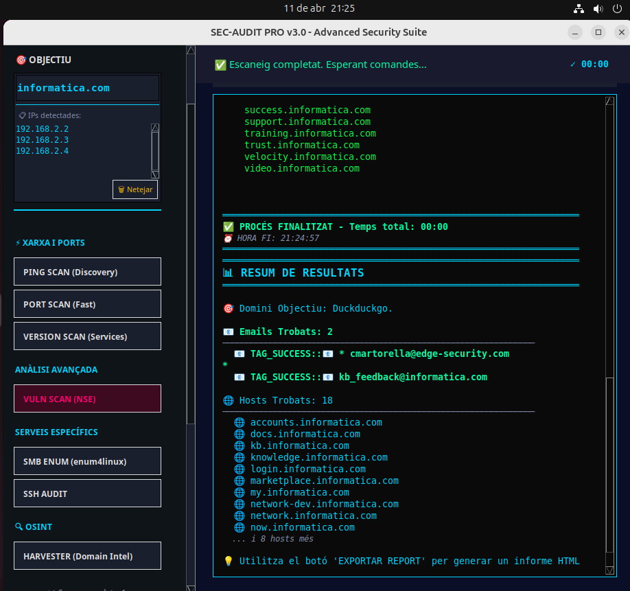
Objectiu: informatica.com (domini associat als servidors)
Font de dades: DuckDuckGo
Correus electrònics trobats: 2
| # | Correu Electrònic | Font |
|---|---|---|
| 1 | cmartorella@edge-security.com |
DuckDuckGo |
| 2 | kb_feedback@informatica.com |
DuckDuckGo |
Subdominis descoberts: 18 hosts
| # | Subdomini | # | Subdomini |
|---|---|---|---|
| 1 | accounts.informatica.com |
10 | now.informatica.com |
| 2 | docs.informatica.com |
11 | success.informatica.com |
| 3 | kb.informatica.com |
12 | support.informatica.com |
| 4 | knowledge.informatica.com |
13 | training.informatica.com |
| 5 | login.informatica.com |
14 | trust.informatica.com |
| 6 | marketplace.informatica.com |
15 | velocity.informatica.com |
| 7 | my.informatica.com |
16 | video.informatica.com |
| 8 | network-dev.informatica.com |
17-18 | i 8 hosts més |
| 9 | network.informatica.com |
[!NOTE] El domini
informatica.compertany a Informatica LLC, una empresa real de gestió de dades. Això indica que els servidors auditats utilitzen un domini que coincideix amb un domini públic real, la qual cosa podria generar confusió en un entorn de producció.
9.2 Vulnerabilitats i Riscos Detectats
| ID | Risc | Descripció |
|---|---|---|
| OSINT-01 | 🟡 Mitjà | El domini informatica.com és un domini públic real — possible confusió i riscos legals |
| OSINT-02 | 🟡 Mitjà | Correu intern kb_feedback@informatica.com descobert — possible vector per phishing |
| OSINT-03 | 🟢 Baix | 18 subdominis exposats públicament — mapeig complet de la infraestructura |
9.3 Propostes de Millora
| ID | Acció Correctiva | Prioritat | Detalls Tècnics |
|---|---|---|---|
| OSINT-01 | Utilitzar un domini propi o reservat per a labs | 🟡 Mitjana | Per a entorns educatius/labs, utilitzar dominis reservats com .local, .lab, .test o dominis registrats propis (ex: escola-lab.cat). Evitar dominis de tercers per prevenir conflictes DNS i problemes legals. |
| OSINT-02 | Implementar proteccions anti-phishing | 🟡 Mitjana | Configurar registres SPF, DKIM i DMARC al DNS per prevenir la suplantació de correu. Implementar formació en conscienciació de seguretat als usuaris. |
| OSINT-03 | Minimitzar l'exposició DNS | 🟢 Baixa | Configurar registres DNS mínims. Desactivar transferències de zona no autoritzades: afegir allow-transfer { none; }; a la configuració de BIND. |
10. Inventari de Vulnerabilitats Detectades
10.1 Servidor Primari (192.168.2.2)
Les següents captures mostren l'inventari complet de CVEs detectades al servidor primari:

<!-- slide -->

<!-- slide -->

<!-- slide -->

<!-- slide -->

<!-- slide -->

Taula consolidada de CVEs — Servidor Primari:
| CVE | CVSS | Severitat | Servei Afectat |
|---|---|---|---|
| CVE-2025-31651 | 9.8 | 🔴 Crítica | OpenSSH 9.6p1 |
| CVE-2025-55754 | 9.6 | 🔴 Crítica | OpenSSH 9.6p1 |
| CVE-2026-29145 | 9.1 | 🔴 Crítica | OpenSSH 9.6p1 |
| CVE-2025-66614 | 9.1 | 🔴 Crítica | OpenSSH 9.6p1 |
| CVE-2025-49124 | 8.4 | 🟠 Alta | OpenSSH 9.6p1 |
| CVE-2026-35414 | 8.1 | 🟠 Alta | OpenSSH 9.6p1 |
| CVE-2024-6387 | 8.1 | 🟠 Alta | OpenSSH 9.6p1 |
| CVE-2026-35385 | 7.5 | 🟠 Alta | OpenSSH 9.6p1 |
| CVE-2024-39894 | 7.5 | 🟠 Alta | OpenSSH 9.6p1 |
| CVE-2026-34487 | 7.5 | 🟠 Alta | OpenSSH 9.6p1 |
| CVE-2026-34483 | 7.5 | 🟠 Alta | OpenSSH 9.6p1 |
| CVE-2026-29146 | 7.5 | 🟠 Alta | OpenSSH 9.6p1 |
| CVE-2026-24880 | 7.5 | 🟠 Alta | OpenSSH 9.6p1 |
| CVE-2026-24734 | 7.5 | 🟠 Alta | OpenSSH 9.6p1 |
| CVE-2025-55752 | 7.5 | 🟠 Alta | OpenSSH 9.6p1 |
| CVE-2025-53506 | 7.5 | 🟠 Alta | OpenSSH 9.6p1 |
| CVE-2025-52520 | 7.5 | 🟠 Alta | OpenSSH 9.6p1 |
| CVE-2025-49125 | 7.5 | 🟠 Alta | OpenSSH 9.6p1 |
| CVE-2025-48989 | 7.5 | 🟠 Alta | OpenSSH 9.6p1 |
| CVE-2025-48988 | 7.5 | 🟠 Alta | OpenSSH 9.6p1 |
| CVE-2025-31650 | 7.5 | 🟠 Alta | OpenSSH 9.6p1 |
| CVE-2025-46701 | 7.3 | 🟠 Alta | OpenSSH 9.6p1 |
| CVE-2025-26465 | 6.8 | 🟡 Mitjana | OpenSSH 9.6p1 |
| CVE-2026-34500 | 6.5 | 🟡 Mitjana | OpenSSH 9.6p1 |
| CVE-2026-24733 | 6.5 | 🟡 Mitjana | OpenSSH 9.6p1 |
| CVE-2025-55668 | 6.5 | 🟡 Mitjana | OpenSSH 9.6p1 |
| CVE-2026-25854 | 6.1 | 🟡 Mitjana | OpenSSH 9.6p1 |
| CVE-2025-26466 | 5.9 | 🟡 Mitjana | OpenSSH 9.6p1 |
| CVE-2025-61795 | 5.3 | 🟡 Mitjana | OpenSSH 9.6p1 |
| CVE-2025-32728 | 4.3 | 🟢 Baixa | OpenSSH 9.6p1 |
| CVE-2026-35386 | 3.6 | 🟢 Baixa | OpenSSH 9.6p1 |
| CVE-2025-61985 | 3.6 | 🟢 Baixa | OpenSSH 9.6p1 |
| CVE-2025-61984 | 3.6 | 🟢 Baixa | OpenSSH 9.6p1 |
| CVE-2026-35387 | 3.1 | 🟢 Baixa | OpenSSH 9.6p1 |
| CVE-2026-35388 | 2.5 | 🟢 Baixa | OpenSSH 9.6p1 |
| CVE-2011-1002 | — | ℹ️ Info | Avahi (mDNS) |
A més, s'han detectat entrades marcades com: - N/A — HIGH — VULNERABLE (2 entrades) - N/A — HIGH — State: LIKELY VULNERABLE (2 entrades)
10.2 Servidor Secundari (192.168.2.3)
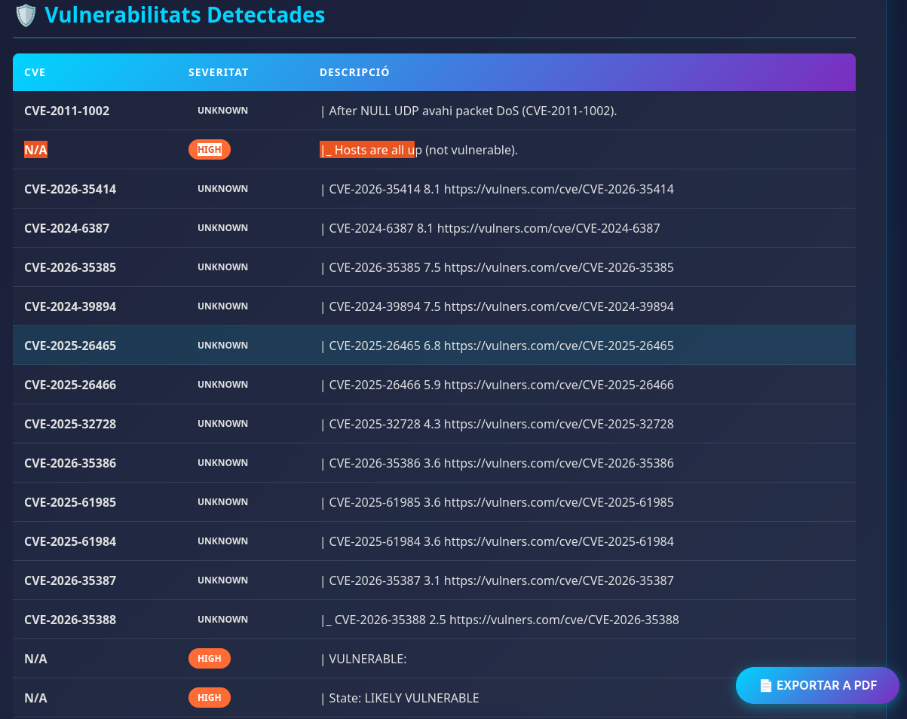
El servidor secundari presenta les mateixes vulnerabilitats que el servidor primari, donat que executen la mateixa versió d'OpenSSH 9.6p1. La taula de CVEs és idèntica a la del servidor primari (vegeu secció 10.1).
11. Matriu de Riscos Consolidada
quadrantChart
title Matriu de Riscos — Probabilitat vs. Impacte
x-axis "Baixa Probabilitat" --> "Alta Probabilitat"
y-axis "Baix Impacte" --> "Alt Impacte"
quadrant-1 "Critic — Accio Immediata"
quadrant-2 "Alt — Planificar"
quadrant-3 "Baix — Monitorar"
quadrant-4 "Mitja — Mitigar"
"OpenSSH CVEs": [0.95, 0.95]
"FTP sense TLS": [0.85, 0.80]
"Corbes NIST SSH": [0.60, 0.85]
"Tomcat 8080": [0.70, 0.75]
"DNS Exposat": [0.50, 0.50]
"mDNS Avahi": [0.40, 0.30]
"DHCP Rogue": [0.30, 0.60]
"Banners Visibles": [0.75, 0.20]
Resum per Nivell de Risc
| Nivell | Quantitat | Exemples Principals |
|---|---|---|
| 🔴 Crític | 4 | CVEs OpenSSH CVSS ≥ 9.0, FTP sense xifratge |
| 🟠 Alt | 15+ | CVEs OpenSSH CVSS 7.0-8.9, Tomcat exposat, Corbes NIST |
| 🟡 Mitjà | 10+ | DNS exposat, mDNS, DHCP, domini públic |
| 🟢 Baix | 5+ | Banners visibles, claus MAC duplicades |
12. Pla de Remediació Prioritzat
[!IMPORTANT] Les accions es presenten per ordre de prioritat. Es recomana executar les accions crítiques dins de les primeres 24-48 hores i les accions altes dins de la primera setmana.
Prioritat 🔴 CRÍTICA (0-48 hores)
| # | Acció | Servidors | Comanda/Procediment |
|---|---|---|---|
| 1 | Actualitzar OpenSSH a la versió més recent | Ambdós | sudo apt update && sudo apt install --only-upgrade openssh-server |
| 2 | Desactivar FTP i migrar a SFTP | Ambdós | sudo systemctl disable --now vsftpd + Configurar SFTP a sshd_config |
| 3 | Desactivar corbes NIST a la configuració SSH | Ambdós | Editar /etc/ssh/sshd_config — veure secció 8.3 |
| 4 | Activar autenticació per claus i desactivar passwords | Ambdós | PasswordAuthentication no + generar claus Ed25519 |
Prioritat 🟠 ALTA (1 setmana)
| # | Acció | Servidors | Comanda/Procediment |
|---|---|---|---|
| 5 | Implementar Fail2Ban per SSH | Ambdós | sudo apt install fail2ban + configurar jail.local |
| 6 | Hardening SSH complet (PermitRootLogin, MaxAuthTries, etc.) | Ambdós | Veure secció 8.3 — SSH-05 |
| 7 | Restringir Tomcat via firewall + desactivar manager | Primari | sudo ufw allow from 192.168.2.0/24 to any port 8080 |
| 8 | Actualitzar Apache Tomcat a l'última versió estable | Primari | Descarregar des d'apache.org i aplicar hardening |
| 9 | Implementar firewall ufw amb política deny-by-default |
Ambdós | sudo ufw default deny incoming && sudo ufw enable |
Prioritat 🟡 MITJANA (1 mes)
| # | Acció | Servidors | Comanda/Procediment |
|---|---|---|---|
| 10 | Restringir DNS (BIND) a la xarxa interna | Ambdós | Configurar allow-query i desactivar recursió |
| 11 | Ocultar versió de BIND | Ambdós | version "not disclosed"; a named.conf.options |
| 12 | Desactivar Avahi/mDNS | Ambdós | sudo systemctl disable --now avahi-daemon |
| 13 | Implementar segmentació de xarxa (VLANs) | Infraestructura | Configurar 802.1Q al switch |
| 14 | Utilitzar domini propi per al laboratori | Infraestructura | Migrar de informatica.com a .lab o .local |
| 15 | Implementar IDS/IPS (Suricata/Snort) | Xarxa | Instal·lar i configurar regles de detecció |
Prioritat 🟢 BAIXA (Manteniment continu)
| # | Acció | Servidors | Comanda/Procediment |
|---|---|---|---|
| 16 | Ocultar banners de tots els serveis | Ambdós | Configurar cada servei individualment |
| 17 | Regenerar adreces MAC úniques per a cada VM | Infraestructura | VBoxManage modifyvm "VM" --macaddress1 auto |
| 18 | Establir procés d'actualitzacions periòdiques | Ambdós | Configurar unattended-upgrades per a patchs de seguretat |
| 19 | Documentar configuració de seguretat | Tots | Crear baseline de seguretat documentada |
| 20 | Implementar monitoratge centralitzat | Tots | Configurar rsyslog + ELK Stack o Graylog |
13. Conclusions
L'auditoria de seguretat realitzada sobre els servidors primari (192.168.2.2) i secundari (192.168.2.3) ha revelat un panorama de seguretat amb punts forts i febleses significatives:
✅ Aspectes Positius
- SMB correctament configurat: Sessions anònimes rebutjades en ambdós servidors
- Serveis mínims exposats: 4-5 ports oberts (superfície d'atac moderada)
- Protocol SSH v2 exclusiu: No s'accepta el protocol SSHv1 obsolet
- Algoritmes post-quàntics disponibles:
sntrup761x25519ja habilitat per a SSH
❌ Aspectes a Millorar Urgentment
- OpenSSH 9.6p1 amb 30+ CVEs conegudes, incloent 4 de severitat crítica (CVSS ≥ 9.0) i exploits públics disponibles
- FTP actiu sense xifratge TLS — credencials transmeses en text pla
- Corbes el·líptiques NIST habilitades a SSH — sospitoses de backdoor de la NSA
- Apache Tomcat 10.1.36 exposat sense restriccions d'accés al servidor primari
- DNS (BIND) accessible sense restriccions de consulta
Classificació Global de Risc
╔═══════════════════════════════════════════════════════════════╗
║ ║
║ NIVELL DE RISC GLOBAL: 🔴 ALT ║
║ ║
║ La presència de vulnerabilitats crítiques amb exploits ║
║ públics disponibles requereix acció correctiva immediata. ║
║ ║
╚═══════════════════════════════════════════════════════════════╝
Recomanació Final
[!CAUTION] Es recomana encaridament no exposar aquests servidors a xarxes no controlades fins que les accions de remediació de prioritat CRÍTICA i ALTA hagin estat completades i verificades. L'existència d'exploits públics per a les vulnerabilitats detectades implica que qualsevol atacant amb connexió a la xarxa podria comprometre els servidors en minuts.
Document generat el: 13 d'abril de 2026
Eina d'auditoria: SEC-AUDIT PRO v3.0 — Advanced Security Suite
Motor d'escaneig: Nmap 7.94SVN
Classificació: CONFIDENCIAL — Distribució restringida
Fi de l'informe